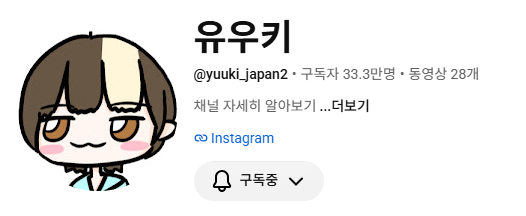

일본에서 낮에는 요리학교, 밤에는 식당일, 부업으로 유튜브하는 청년 유우키
구독자가 33.3만명인데

영상 조회수는 대부분 100만이 넘어간다.
올리지 하루도 안된 영상도 26만.
구독자 대비 조회수가 3~4배는 나오는중.
한국에서 무고로 미투당해서 고생했지만, 최근에 가해자 유죄 판결(여자 집유, 공범 실형)도 나왔고
채널도 잘되는거 같아서 흐뭇함.
이제는 수익화 했으려나?

일본에서 낮에는 요리학교, 밤에는 식당일, 부업으로 유튜브하는 청년 유우키
구독자가 33.3만명인데
영상 조회수는 대부분 100만이 넘어간다.
올리지 하루도 안된 영상도 26만.
구독자 대비 조회수가 3~4배는 나오는중.
한국에서 무고로 미투당해서 고생했지만, 최근에 가해자 유죄 판결(여자 집유, 공범 실형)도 나왔고
채널도 잘되는거 같아서 흐뭇함.
이제는 수익화 했으려나?
폭파했던 계정이 100만이 넘었기 때문에.. 이정도 조회수는 나와주는듯...
얘 영상보면 잔잔하게 재미있음. 지루해질수도 있는걸 잔잔한 재미로 만드는 능력은 타고난듯.
진짜 열심히 살더라 응원함
유우키 영상은 편안하게 볼 수 있음
과시나 욕설 이런 것 없고 사람들이랑 교류하는것도 진짜 건전하고 평화로움.
ㄹㅇ 차분하고 담담하게 열심히 사는거같음 호감
이사람 전업 유튜버 해도 떼돈 벌텐데 그렇게 안하고 엄청 건실하게 살더라